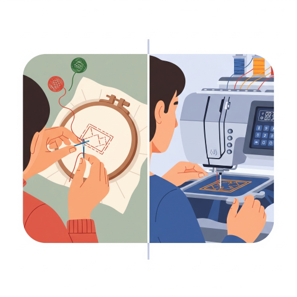

Embroidery
Meaning of Embroidery
Embroidery is the art of decorating fabric or other materials using a needle to apply thread or yarn. It is one of the oldest forms of decoration and is used to beautify clothes, household items, and accessories.
Embroidery can be done by hand or by machine. Hand embroidery is more creative and expressive, while machine embroidery is faster and used in commercial production.
Purpose of Embroidery
- Embroidery is used to Beautify clothing and fabric items.
- Embroidery is used to Show cultural identity and tradition.
- Embroidery is used to Decorate household items like tablecloths, curtains, bedspreads.
- Embroidery is used to Personalize or brand clothing.
- Embroidery is used to Show skill and creativity.
- Embroidery is used to Add economic value to plain fabric.
Types of Embroidery
The different types of embroidery exist to serve distinct purposes in production and design. Hand embroidery is valued for its slow, detailed, and personalized designs, making it ideal for unique or traditional items. In contrast, machine embroidery is used for its speed, uniformity, and ability to create consistent patterns for mass production, such as on uniforms and ready-to-wear clothing.

- Hand Embroidery - Done manually using needle, thread, and hand techniques.It is slow but allows detailed, personal designs.Common in traditional African clothing.
- Machine Embroidery - Done using an embroidery sewing machine.Faster and produces uniform patterns.Common in mass production of clothes and uniforms.
Steps in Doing Hand Embroidery
- Select a design or pattern.
- Choose your fabric and thread.
- Transfer the design onto the fabric (using tracing paper or a pencil).
- Place the fabric in the hoop and stretch it.
- Thread your needle and tie a knot at the end.
- Begin stitching following the pattern.
- Finish off the thread properly at the back of the fabric.
- Remove hoop and press the fabric with a warm iron (optional).
Materials and Tools Used in Embroidery
The materials and tools for embroidery are necessary because each one plays a specific and crucial role in the process.
- Needle – Used to stitch the thread into the fabric.
- Thread/Yarn – Used to make the stitches (can be cotton, silk, rayon, etc.).
- Fabric – The cloth where the design is stitched (e.g., cotton, linen, silk).
- Embroidery Hoop – A circular frame that keeps the fabric tight while stitching.
- Thimble – A small metal/plastic cup worn on the finger to protect it while pushing the needle.
- Scissors – Small, sharp scissors are used to trim threads neatly.
- Embroidery Patterns – Drawings or designs to be stitched.
- Fabric marker/chalk/pencil – Used to trace the design on the fabric.
- Tailor’s track – For transferring design onto fabric (like a tracing wheel).
Sources of Embroidery Designs
Embroidery designs can come from many sources, including:
- Nature – Leaves, flowers, animals, fruits, trees.
- Environment – Buildings, clouds, rivers, sun, moon, etc.
- Cultural patterns – Traditional motifs, tribal marks, adire patterns, etc.
- Magazines and Books – Pattern books and fashion magazines.
- Gift Wrappers and Cards – Useful for floral and decorative patterns.
- Internet and Software – Modern embroidery patterns are often found online or created using computer design tools.
Methods of Transferring Embroidery Designs
Before stitching begins, the chosen design must be transferred onto the fabric. Common methods include:
- Using Carbon Paper : Place carbon paper between the design and the fabric and trace over the design to transfer it.
- Pricking and Pouncing : Prick holes along the lines of the design and rub powder (e.g., chalk or charcoal) to transfer dots on the fabric.
- Tailor’s Track (Tracing Wheel) : A wheel with a handle is rolled over the design on tracing paper to press the design onto fabric.
- Direct Drawing : The design is drawn directly on the fabric using fabric pencils or chalk.
types of embroidery stitches:
here are many types of stitches in embroidery. Each stitch has its own use and beauty. Here are the major types of embroidery stitches:
- Herringbone Stitch - A decorative, zig-zag stitch used for borders or background designs.
- Stem Stitch - Looks like a twisted rope and is commonly used for outlines and stems of flowers.
- Loop Stitch - A series of looped stitches used for creating textures such as leaves or flower petals.
- Feather Stitch - A V-shaped stitch that branches out like feathers. Used for decorating borders and vines.
- Chain Stitch – Looks like chain links, used for outlining.
- Running Stitch – A simple dashed-line stitch used for outlines or filling.
- Satin Stitch – A close-packed stitch used to fill in shapes for a smooth finish.
- French Knot – A small raised knot that adds texture (like flower centers or eyes).
Embroidery in Nigerian Culture
Embroidery is widely used in traditional Nigerian attire, especially:
- Agbada and Danshiki – Yoruba.
- Babban Riga – Hausa.
- George wrappers and blouses – Igbo.
- Cap decoration (e.g. Fila, Abeti Aja).
- Embellishing head ties (gele) and scarves.
Importance of Embroidery in Nigeria
- Promotes cultural heritage.
- Serves as a source of income.
- Encourages creativity and skill development.
- Adds beauty and elegance to clothing.
- Used in branding uniforms and clothing for events.
- Can be a form of therapy or relaxation.
- Plays a role in fashion design and textile art.
Challenges in Learning Embroidery
- Lack of access to good materials or fabric.
- Lack of interest or patience among students.
- Poor light in the work area.
- Limited time in school to practice.
- Expensive sewing machines (for machine embroidery)
Solutions to Challenges in Learning Embroidery
- Use locally available materials (e.g. cotton threads, plain cotton fabric).
- Organize school craft clubs for more practice time.
- Learn simple, fun stitches first.
- Practice at home or during holidays.
- Reuse old clothes or scraps for stitching practice.
Careers Related to Embroidery
Students skilled in embroidery can become:
- Fashion designers.
- Tailors and seamstresses.
- Embroidery artists.
- Costume designers.
- Craft business owners.
- Textile designers.
- Art teachers or workshop instructors.
- Interior decorators.
Health and Safety Tips in Embroidery
- andle sharp objects like needles and scissors carefully.
- Use good lighting to avoid straining the eyes.
- Sit with a straight back to prevent body pain.
- Store materials in a clean, dry place.
- Wash hands before and after working on fabric.
Care for Embroidered Items
- Wash gently with mild soap.
- Do not scrub heavily.
- Iron on the reverse side to avoid damaging the stitches.
- Store in a clean, dry place to prevent damage by insects.